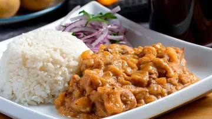

Receta de Carapulcra

Esta receta de dara el proceso para preparar uno de los mejores Carapulcra de probaras
Ingredientes
- Carne de Cerdo
- Condimentos
- Cebolla de Cabeza
- Papa seca
Pasos
- Cortar la Carne de Cerdo en trozos
- Sazonar la Carne con los Condimentos
- Cortar la cebolla en filas
- Agregar la Papa seca a una olla con suficiente agua para que espese
- Servir la carne con la papa seca en un plato
- ¡Disfrutalo!